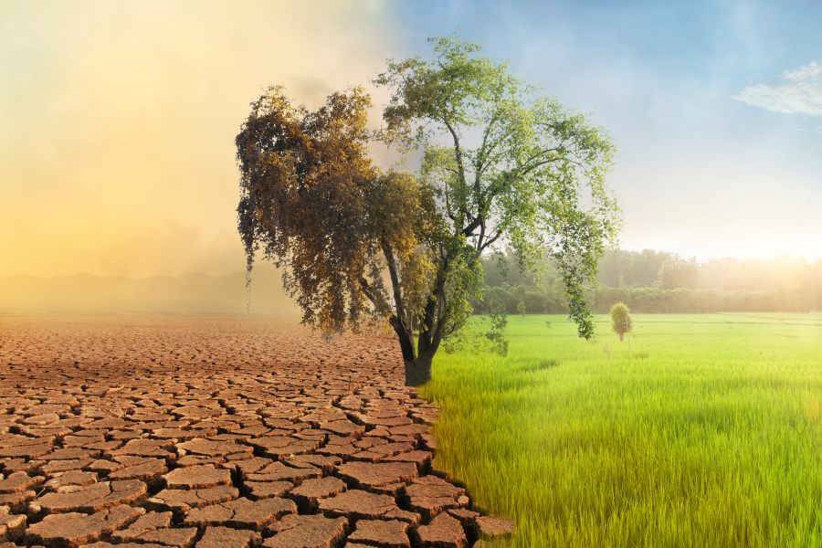

Jaki jest problem?
Globalne ocieplenie to gwałtowny wzrost średniej temperatury powierzchni Ziemi, wynoszący już ponad 1,1°C od czasów przedindustrialnych (1850–1900), wywołany głównie antropogeniczną emisją gazów cieplarnianych. Działalność człowieka, taka jak spalanie paliw kopalnych i wylesianie, jest główną przyczyną ocieplenia (konsensus naukowy >99%). Prowadzi to do ekstremalnych zjawisk pogodowych, topnienia lodowców i wzrostu poziomu mórz.

Artykuły
Jak zapobiegać problemowi?
Zapobieganie globalnemu ociepleniu wymaga jednoczesnych działań na poziomie systemowym (państwowym) oraz indywidualnym, aby drastycznie ograniczyć emisję gazów cieplarnianych do atmosfery.